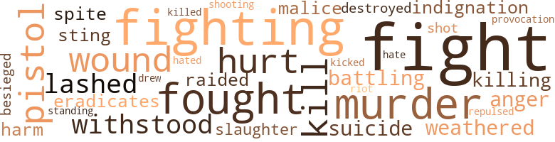
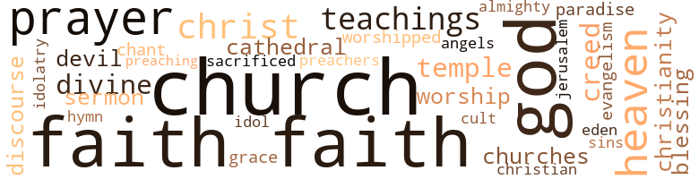

Another Chance, by Bridgeforth, Med (1951)
34 music-related terms matched in this text.
Most frequent terms in this topic: section (5); song (4); chapter (3); tune (3); music (2)
chant.n.01
Definition: a repetitive song in which as many syllables as necessary are assigned to a single tone
| word | sentence |
|---|---|
| chant | FAITH It is recorded that long before the sun was given a place in the firmament , or the moon swung out in space to reflect the glory of the sun by night , even before the stars sang together in a chant of glorification to their Maker , before the earth took on shape and assumed its place as a world among millions of others in the universe , eons before the beginning of time itself , Jesus , at the birth of eternity , dwelt in heavenly splendor at the righthand side of God , His Father . |
chapter.n.01
Definition: a subdivision of a written work; usually numbered and titled
| word | sentence |
|---|---|
| chapter | But God moves in a mysterious way and He was that morning , through the Board of Directors of The Amalgamated Mills Corporation , making His first move in this new chapter of the life of Grant Steele . |
| chapters | Perhaps , had the message come a little sooner , the remaining chapters of this book had never been written . |
| chapter | And in his dreams he saw how , according to Second Samuel , eleventh chapter , And it came to pass , after the year was expired , at the time when kings go forth to battle , that David sent Joab , and his servants with him , and all Israel ; and they destroyed the children of Ammon , and besieged Babbah . |
| chapter | John , alone , outcast on the Isle of Patinos , looked toward the heavens , dreamed and wrote down his dream as the final chapter of the Greatest Book . |
dance.n.01
Definition: an artistic form of nonverbal communication
| word | sentence |
|---|---|
| dance | The seriousness of the matter did not touch Grant immediately , for he jumped lip , hugged and kissed his mother and father rapturously , and even executed a rude sort of dance in the middle of the floor . |
dance.v.03
Definition: skip, leap, or move up and down or sideways
| word | sentence |
|---|---|
| danced | Once in a while a glimpse could be caught of his eyes - dark brown eyes that twinkled and danced when something good or favorable came to pass , eyes that crinkled with an expression of " what is it all about ? " at other times . |
| danced | She danced alone , suggestively and seductively , while the thin folds of her daringly painted scarf revealed all too plainly the curved outlines of her slim body . |
hymn.n.01
Definition: a song of praise (to God or to a saint or to a nation)
| word | sentence |
|---|---|
| hymn | Grant turned away from the crowd , horrified , and started home blindly , while from the church far across the fields came the echo of the little choir 's rendering of his mother 's favorite hymn : What peaceful hours I once enjoyed , How sweet their mem ' ry still . |
kettle.n.04
Definition: a large hemispherical brass or copper percussion instrument with a drumhead that can be tuned by adjusting the tension on it
| word | sentence |
|---|---|
| kettle | Isaac Watt , dubbed lazy , shiftless , worthless , good - for-nothing , no-account , dreamed merrily on to the tune of a kettle 's song , and that song still echoes from the hearts of the steam engines plowing their way across the length and breadth of the land . |
lullaby.n.01
Definition: a quiet song intended to lull a child to sleep
| word | sentence |
|---|---|
| lullaby | Slow breezes gently rocked the world in lullaby , and the dark fringe of the woodlands edge bordering the wide roads of the countryside swayed and nodded as if they too reluctantly permitted Grant Steele 's departure even as they bade him a silent farewell . |
music.n.01
Definition: an artistic form of auditory communication incorporating instrumental or vocal tones in a structured and continuous manner
| word | sentence |
|---|---|
| music | So he waited a while longer and then he heard noise , music , singing , talking , and evidently someone was attempting some feature of entertainment , for above the din he heard : " Go it kid ! " |
| music | And then the voices died down and the music continued . |
promenade.n.01
Definition: a formal ball held for a school class toward the end of the academic year
| word | sentence |
|---|---|
| promenade | Situated just off the Avenue , this temple of the rich and powerful commands a view of Americas greatest promenade , and through its plateglass windows there gazes with knowing stare upon the tawdry display , many an ogling eye of the idle rich , the busy rich , the good rich and the bad rich . |
rumba.n.01
Definition: syncopated music in duple time for dancing the rumba
| word | sentence |
|---|---|
| rhumba | She alone had not noted his entrance , and was still wiggling away to the tune of the fastest rhumba . |
section.n.01
Definition: a self-contained part of a larger composition (written or musical)
| word | sentence |
|---|---|
| section | I hope to live to see the day when the church - and I do not mean the great edifices of brick and stone whose spires point upward from every section of the city ; but I mean the church of God which is exemplified by the spirit of the Nazarene , Who came to call sinners and not the righteous - I repeat , I hope to live to see the day when the church will open wide its doors to what we call sinners . |
| section | This packing plant today furnishes a market for the cattle of the farmers in a large section , thus saving in freight charges to the west and increasing the source of revenue for the farmers . |
| section | He visited farmers in their homes and fields and in their conferences , and with his sincere , persuasive , and friendly voice , had shown them the feasibility of raising more cotton and less tobacco in that section . |
| section | Stimulated by his interest , the young man painted more vividly the great opportunities awaiting out in the world , and left him as a souvenir an Hlustrated news section of a recent newspaper . |
| section | It was in another section of the town and he faintly remembered that number being pointed out to him as a bachelor apartment home - exclusively for bachelors with plenty of time and even more money . |
sing.v.02
Definition: produce tones with the voice
| word | sentence |
|---|---|
| sang | On silv ' ry stream and dew-kis ' t flow r , The Sun King cast his ray , While Nature Hallelujah sang , On Resurrection Day . |
| sang | FAITH It is recorded that long before the sun was given a place in the firmament , or the moon swung out in space to reflect the glory of the sun by night , even before the stars sang together in a chant of glorification to their Maker , before the earth took on shape and assumed its place as a world among millions of others in the universe , eons before the beginning of time itself , Jesus , at the birth of eternity , dwelt in heavenly splendor at the righthand side of God , His Father . |
| sing | She was trying to sing and the song was one that no decent person would acknowledge knowing . |
song.n.01
Definition: a short musical composition with words
| word | sentence |
|---|---|
| songs | In tender hearts and thoughtful minds , Love of Him yet holds sway , In songs , in prayers of hope and faith Each Resurrection Day . |
| song | Isaac Watt , dubbed lazy , shiftless , worthless , good - for-nothing , no-account , dreamed merrily on to the tune of a kettle 's song , and that song still echoes from the hearts of the steam engines plowing their way across the length and breadth of the land . |
| song | Isaac Watt , dubbed lazy , shiftless , worthless , good - for-nothing , no-account , dreamed merrily on to the tune of a kettle 's song , and that song still echoes from the hearts of the steam engines plowing their way across the length and breadth of the land . |
| song | Madge Blake , in her room , seated before a dressing-table making preparations for a possible evening of gaiety , whistled a gay little song as she tapped her pretty dancing feet in accompaniment . |
| song | She was trying to sing and the song was one that no decent person would acknowledge knowing . |
tune.n.01
Definition: a succession of notes forming a distinctive sequence
| word | sentence |
|---|---|
| line | Here in this haven of Westminister gather men from all walks of life , each a master in his chosen work ; and Grant Steele , a master in his line , seated in a deep leather chair with his morning paper and cigarette , is among the elect of the cult . |
| tune | Martha Steele hums a religious tune softly as she busies herself with her housework . |
| tune | Isaac Watt , dubbed lazy , shiftless , worthless , good - for-nothing , no-account , dreamed merrily on to the tune of a kettle 's song , and that song still echoes from the hearts of the steam engines plowing their way across the length and breadth of the land . |
| tune | She alone had not noted his entrance , and was still wiggling away to the tune of the fastest rhumba . |
whistle.v.01
Definition: make whistling sounds
| word | sentence |
|---|---|
| whistled | Madge Blake , in her room , seated before a dressing-table making preparations for a possible evening of gaiety , whistled a gay little song as she tapped her pretty dancing feet in accompaniment . |
| whistle | Let him dream as he listens to the shrill echo of its plaintive whistle calling faint and fainter . |
54 violence-related terms matched in this text.
Most frequent terms in this topic: fight (8); fighting (4); fought (3); murder (3); wound (2)
aggravation.n.02
Definition: unfriendly behavior that causes anger or resentment
| word | sentence |
|---|---|
| provocation | They seemingly go on forever , happy almost in the knowledge that they possess what they boastfully call a woman 's charms , and using them upon the slightest provocation and apparently with perfect impunity . |
anger.n.01
Definition: a strong emotion; a feeling that is oriented toward some real or supposed grievance
| word | sentence |
|---|---|
| anger | ' For Ms anger endureth but a moment . |
battle.v.01
Definition: battle or contend against in or as if in a battle
| word | sentence |
|---|---|
| battling | And Jonathan Harmon , always battling for mercy , replied : " I do n't see why we should not give him another chance . |
besiege.v.01
Definition: surround so as to force to give up
| word | sentence |
|---|---|
| besieged | And in his dreams he saw how , according to Second Samuel , eleventh chapter , And it came to pass , after the year was expired , at the time when kings go forth to battle , that David sent Joab , and his servants with him , and all Israel ; and they destroyed the children of Ammon , and besieged Babbah . |
defy.v.01
Definition: resist or confront with resistance
| word | sentence |
|---|---|
| withstood | Hers was not a fighting spirit ; retiring and weak , she had withstood the hardships of her life thus far and could see nothing better in store than that she must lay down the armor and make the sacrifice for Grant . |
destroy.v.04
Definition: put (an animal) to death
| word | sentence |
|---|---|
| destroyed | And in his dreams he saw how , according to Second Samuel , eleventh chapter , And it came to pass , after the year was expired , at the time when kings go forth to battle , that David sent Joab , and his servants with him , and all Israel ; and they destroyed the children of Ammon , and besieged Babbah . |
draw.v.23
Definition: pull (a person) apart with four horses tied to his extremities, so as to execute him
| word | sentence |
|---|---|
| drew | The yard was strewn with a litter of trash ; the house was in need of paint ; and the children gathered curiously on the porch as the cab drew up , as though it were a novelty . |
eliminate.v.03
Definition: kill in large numbers
| word | sentence |
|---|---|
| eradicates | He relieves them of their burden , eradicates every sorrow and wipes away every tear . |
fight.n.02
Definition: the act of fighting; any contest or struggle
| word | sentence |
|---|---|
| fighting | The battle of the Kings waxed hot , and Uriah , being in the forefront , was smitten early in the fighting ; and there was an end to Uriah , the Hittite . |
fight.n.05
Definition: a boxing or wrestling match
| word | sentence |
|---|---|
| fight | In the last ditch the weak perish , but the strong fight on . ' |
| fight | Under ordinary circumstances the small matter of a fight or a pistol shot went unnoticed at Jake 's emporium of the wicked , for Jake was a shrewd manipulator in police circles as well as at a card table . |
| fight | He was a man who by nature loved a fight for the pure fun of the thing , and who had made , single-handedly , more than one raid on questionable resorts . |
| fight | Their perverted minds must put up a new fight at each recurrence of the subconscious spark of decency in every man . |
| fight | Even the men who were partners in the game with Steele were working for Graff , and the fight which was staged was merely a part of the frame-up . |
| fight | These things created a desire within him to get out of it all ; to rise above such surroundings and to be a somebody connected with a something ; to experience the life of the outer world ; to live , to love and to begin his fight up the hill of his ambition before his mind became dwarfed and dented like the minds of his neighbors . |
fight.v.02
Definition: fight against or resist strongly
| word | sentence |
|---|---|
| fighting | Hers was not a fighting spirit ; retiring and weak , she had withstood the hardships of her life thus far and could see nothing better in store than that she must lay down the armor and make the sacrifice for Grant . |
| fight | Now that she was so near the valley of the shadow of death , she was reluctant to fight her way back to a doubtful future . |
| fought | But through all the disadvantages of an income that was a mere pittance , health beginning to break under the strain , and a home which offered none of the comforts and few of the necessities of life , Priscilla Meekum held her little band together and fought bravely for them and with them to the end . |
| fight | Will it put new life into him and give him inspiration to fight and come out victorious in a losing battle ? |
| fought | It was he who as a junior executive had fought for the purchase of a small packing plant in a small Middle Atlantic town in the Piedmont District . |
| fought | Men who made but few mistakes ; men who had dreamed , fought and won . |
| fighting | Jack Myrth , Irish , humorous , wide-awake , and still in his late thirties , had come over to America a barefoot , ragged lad , with nothing but his fighting Irish blood to call him higher . |
| fighting | At an age when men are " arriving " or " have arrived , " Frank W. Woolworth was fighting his way through the dense hedges of continuous business failures . |
hate.v.01
Definition: dislike intensely; feel antipathy or aversion towards
| word | sentence |
|---|---|
| hated | He had hated to leave his newly made friends . |
| hate | Thou shalt not bow down thyself to them , nor serve them : for I the Lord thy God am a jealous God , visiting the iniquity of the fathers upon the children unto the third and fourth generations of them that hate me ; and showing mercy unto thousands of them that love me , and keep my commandments . |
indignation.n.01
Definition: a feeling of righteous anger
| word | sentence |
|---|---|
| indignation | Perhaps his talk stimulated curiosity among the younger folks of Maplewood ; perhaps his enthusiasm was too apparent ; perhaps his talk was lacking in the proper reverence ; or , perhaps it was a challenge to the officers of the church - this remains unknown - but the officials and ciders cocked their ears , stiffened their backs and registered righteous indignation . |
injury.n.01
Definition: any physical damage to the body caused by violence or accident or fracture etc.
| word | sentence |
|---|---|
| harm | Let it be put down in justice to Grant Steele that it was certainly not his intention to carry his plan with regard to the breaking of the fifth Commandment to the extent of doing the harm which had been done . |
kick_back.v.02
Definition: spring back, as from a forceful thrust
| word | sentence |
|---|---|
| kicked | Grant Steele revolted , kicked in the halter , threw up the Maplewood sponge and , to the surprise of his father and mother , came to them begging for a chance to try life in the great city . |
kill.v.10
Definition: cause the death of, without intention
| word | sentence |
|---|---|
| kill | He saw his way clear to break the seventh and tenth Commandments ; to kill two birds with one stone , if - Horace Blake was an underofficial of The Amalgamated Mills Corporation . |
| kill | To kill two birds with one stone , what would be easier than for him to appropriate for his own use a hundred thousand dollars of the company 's money , and explain to Mr. Harmon that he did it because of the bet ? |
| killed | Great scareheads were printed on the front page of most of its newspapers , and newsboys all over the city took up the cry : HUNDRED-THOUSAND-DOLLAR EMBEZZLEMENT BY GRANT STEELE By spreading such a headline across its front sheet in bold , black type a newspaper satisfied the lust of a curious and fickle public ; it helped to increase its circulation ; its circulation increased its advertising value ; its advertising value increased the income in the till ; and thus four birds were killed with one stone . |
killing.n.02
Definition: the act of terminating a life
| word | sentence |
|---|---|
| killing | But , Grant , I do not believe there is a man living who can break the fourth , about the Sabbath ; the fifth , about honoring your father and mother ; the sixth , about killing - taking that which you can not give ; the seventh , about adultery , and all of the others - I repeat , that I do not believe there is a man living who can break all of these and still hold his own respect and command the respect of his community , his friends and his family . |
malice.n.01
Definition: feeling a need to see others suffer
| word | sentence |
|---|---|
| spite | But in spite of the cycle , Grant Steele , the mighty man of Amalgamated Mills , was hurt , sick at heart and of body , and in jail . |
| malice | Not even they suspected that behind his generous smile there were curses ; that within his velvet palm there was an iron claw ; that beneath his mask of friendliness there was a heart of malice . |
murder.n.01
Definition: unlawful premeditated killing of a human being by a human being
| word | sentence |
|---|---|
| murder | Men , too cowardly or too " respectable " to commit murder themselves , may hire it done for a price . |
| murder | Harmon had come to reason with Grant because of the scandal he had brought upon himself through his connection with the gunman 's murder trial . |
| murder | Because of the excessive demands upon his pockethook , demands accrued on the debit side of his luxury expense account , such as the expensive murder trial , along with the ever 94 Another Chance increasing demands of his family , and his heavy losses at gambling , due to his shattered nerves , Steele suddenly realized himself badly in need of funds . |
pain.v.02
Definition: cause emotional anguish or make miserable
| word | sentence |
|---|---|
| hurt | But in spite of the cycle , Grant Steele , the mighty man of Amalgamated Mills , was hurt , sick at heart and of body , and in jail . |
| hurt | Harmon was hurt and disappointed . |
pistol.n.01
Definition: a firearm that is held and fired with one hand
| word | sentence |
|---|---|
| pistol | Under ordinary circumstances the small matter of a fight or a pistol shot went unnoticed at Jake 's emporium of the wicked , for Jake was a shrewd manipulator in police circles as well as at a card table . |
| pistol | And so it was Chief Mike who was the first outsider to step into Jake McGraw 's place after the pistol shot which had found lodging in Grant Steele 's forearm . |
raid.v.01
Definition: search without warning, make a sudden surprise attack on
| word | sentence |
|---|---|
| raided | As Grant listened , Jake told him that he knew why Inn Side Out was raided the day Grant was shot . |
repel.v.03
Definition: force or drive back
| word | sentence |
|---|---|
| repulsed | As Madge approached him , he repulsed her , saying blankly and faintly , but truthfully : " I did n't know-I did n't know . " |
resist.v.04
Definition: withstand the force of something
| word | sentence |
|---|---|
| standing | Westminister is built on solid ground though , for Jonathan Harmon is a board member there , standing firm for the good name of the club and all its supporters . |
riot.n.01
Definition: a public act of violence by an unruly mob
| word | sentence |
|---|---|
| riot | Taking into consideration the fact that a daily newspaper must place before you a report of the activities of the world every twenty-four hours , no surprise should he evinced if all the detail of a fire in Bagdad , an earthquake in Italy , a riot in Chicago , a camp-meeting in Kentucky or a watermelon feast in Georgia are not a hundred per cent precise , and one should feel that he has a reason - able portion of the news if the generalities are correct . |
shoot.v.02
Definition: kill by firing a missile
| word | sentence |
|---|---|
| shot | After hurriedly examining reports , he sent for Horace Blake , and when Blake arrived , plunged immediately into the following conversation : " Blake , the western branch is all shot to pieces . |
shooting.n.02
Definition: killing someone by gunfire
| word | sentence |
|---|---|
| shooting | Let him dream as the big locomotive with its trail of heavy cars , like some huge comet shooting from here to there , lumbers by on its way to the scene of little Grant 's thoughts . |
slaughter.n.03
Definition: the savage and excessive killing of many people
| word | sentence |
|---|---|
| slaughter | From the time a man is arrested and charged with a crime , he is marked for the slaughter . |
sting.n.03
Definition: a painful wound caused by the thrust of an insect's stinger into skin
| word | sentence |
|---|---|
| sting | - Exodus 20 : l2 Returning to his office smarting under the sting of the bullet wound as well as the words of the police justice , Grant Steele was in no happy frame of mind as he settled himself comfortably in his office chair , and his secretary handed him a telegram which had arrived during his absence . |
suicide.n.01
Definition: the act of killing yourself
| word | sentence |
|---|---|
| suicide | " We followed him to the docks on East River , where Grant stopped , gazed around shrinkingly and stepped lip on a pile where he poised for a moment before his plunge to suicide , when from out of the darkness , I yelled : Grant ! |
weather.v.01
Definition: face and withstand with courage
| word | sentence |
|---|---|
| weathered | But Harmon is a man himself who has weathered the many and varied storms of life , and out of his great fund of experience comes a reserve strength capable of meeting emergencies far graver than the one confronting him now . |
whip.v.04
Definition: strike as if by whipping
| word | sentence |
|---|---|
| lashed | The seasoned captain on the bridge of his ship looks through and beyond the spray lashed up by a rough , running sea and peers through the blackness to catch sight of some friendly light on shore . |
wound.n.01
Definition: an injury to living tissue (especially an injury involving a cut or break in the skin)
| word | sentence |
|---|---|
| wound | Steele , being hurt , was arrested along with the others , but carried to a hospital under guard , where his wound was dressed and from where he was then escorted back to police headquarters . |
| wound | - Exodus 20 : l2 Returning to his office smarting under the sting of the bullet wound as well as the words of the police justice , Grant Steele was in no happy frame of mind as he settled himself comfortably in his office chair , and his secretary handed him a telegram which had arrived during his absence . |
169 religion-related terms matched in this text.
Most frequent terms in this topic: faith (42); church (31); God (26); prayers (7); Heaven (5)
blessing.n.05
Definition: the act of praying for divine protection
| word | sentence |
|---|---|
| blessings | And so a few days later Grant Steele , the country lad , the youthful dreamer , with the consent and blessings of his parents , with his little derby hat , his canvas traveling valise , his big umbrella , a package of lunch , and wearing his best Sunday clothes , was at the hut of a railway station in the sweet village of Maplewood , headed toward the city and what he believed to be the realization of the dreams of his youth . |
| blessing | The rain had now ceased ; the skies no longer were overcast ; the sun had conquered the other elements , and smiled a brilliant blessing on the gloom-draped homestead of the Steeles . |
cathedral.n.02
Definition: the principal Christian church building of a bishop's diocese
| word | sentence |
|---|---|
| cathedrals | " Few preachers today are looking for the charges in which they can do the most good ; they are looking for the palatial cathedrals and rich congregations who want to be pulpit-pampered and not gospel-preached at . |
| cathedral | It will do more good for a church to reach out and help bring back just one down-and-outer than to build a cathedral on every corner in this ugly city . |
chant.n.01
Definition: a repetitive song in which as many syllables as necessary are assigned to a single tone
| word | sentence |
|---|---|
| chant | FAITH It is recorded that long before the sun was given a place in the firmament , or the moon swung out in space to reflect the glory of the sun by night , even before the stars sang together in a chant of glorification to their Maker , before the earth took on shape and assumed its place as a world among millions of others in the universe , eons before the beginning of time itself , Jesus , at the birth of eternity , dwelt in heavenly splendor at the righthand side of God , His Father . |
christendom.n.01
Definition: the collective body of Christians throughout the world and history (found predominantly in Europe and the Americas and Australia)
| word | sentence |
|---|---|
| Christianity | Jonathan Harmon , gray-haired and well groomed , a wealthy , retired manufacturer , a member of the Board of Amalgamated Mills Corporation , whose life has been in unallected harmony with the fundamental principles of Christianity and the social conventions , and who takes a keen and fatherly interest in young Grant Steele because of his natural ability , drops in for his mail and catches sight of the younger man . |
| Christianity | While Christianity may make a good showing for what investors call a " long pull , " it nevertheless has its " bear " periods . |
christian.n.01
Definition: a religious person who believes Jesus is the Christ and who is a member of a Christian denomination
| word | sentence |
|---|---|
| Christian | This through the ages has been the Christian 's eternal refuge and hope , and Martha Steele passed on in this hope . |
church.n.02
Definition: a place for public (especially Christian) worship
| word | sentence |
|---|---|
| church | " It used to be a custom when I was coming along , and we have not yet entirely outgrown that custom , to turn people out of the church . |
| church | Now it seems to me that if ever a man needed the protection of a church , if there is any such thing as church protection , he needs it when he has stumbled out of the straight and narrow path and is floundering in sin . |
| church | I hope to live to see the day when the church - and I do not mean the great edifices of brick and stone whose spires point upward from every section of the city ; but I mean the church of God which is exemplified by the spirit of the Nazarene , Who came to call sinners and not the righteous - I repeat , I hope to live to see the day when the church will open wide its doors to what we call sinners . |
| church | The business of a church is to save souls and take care of the widows and orphans and reach out and pick up fallen men and women and not turn them out in an hour of need . |
| church | It will do more good for a church to reach out and help bring back just one down-and-outer than to build a cathedral on every corner in this ugly city . |
| church | The church builds its temples in the hearts of men and until it can help faltering men to come back it is not a church , I do n't care how many silk-hatted bishops you hire to fake an appearance with a stylish front . |
| church | " And after breakfast that Easter morning , Mrs. Harmon and I were about to leave home for church when Grant took Betty by the hand and , approaching us , said : ' Mr. Harmon , Betty and I thought we woidd go to hear a sermon this Easter . |
| church | Richard Steele , a pillar of the church , an oak in the forest of the Lord , a gnarled and twisted oak though he was , with a thatch of hair whitened with the snows of many winters : a skin parched and shrunken by the sun of many summers ; a brow furrowed deep under heavy and varied trials ; a back bent and bowed under the weight of many burdens , cheerfully filled his duties as head of his home . |
| churches | It was Harmon , who established schools , hospitals and churches in the industrial towns built up around his mills . |
| church | MAPLEWOOD A glorious sun smiling at upturned flowers gently blown by tepid zephyrs ; a Sabbath lull broken only by the warble of a redbreast in a cloister of fruit blossoms in accompaniment to the resonant tolling of the village church bell , were Nature 's reminders of the Resurrection Morn . |
| church | Going to Sunday school and church were the big events in his monotonous routine and he welcomed these diversions for the sake of the occasional glimpses he caught of the outer world . |
| church | Martha Steele , dressed for church , having made a final inspection of her home , waited cheerfully on the front porch for Richard to drive around with the one-horse shay . |
| church | And thus it was that the little family joined the members and friends of the little white church , their entrance marked by solemn tollings of the bell . |
| church | Perhaps his talk stimulated curiosity among the younger folks of Maplewood ; perhaps his enthusiasm was too apparent ; perhaps his talk was lacking in the proper reverence ; or , perhaps it was a challenge to the officers of the church - this remains unknown - but the officials and ciders cocked their ears , stiffened their backs and registered righteous indignation . |
| church | Passing the village church , the same church where he first got his ambition to make his way in the great city , Grant was curiously drawn thereto by the large crowd outside . |
| church | Grant turned away from the crowd , horrified , and started home blindly , while from the church far across the fields came the echo of the little choir 's rendering of his mother 's favorite hymn : What peaceful hours I once enjoyed , How sweet their mem ' ry still . |
| church | Came to him even more vividly than when he had heard it in the Sunday school of the little white church back in Maplewood , some twenty years before . |
| church | Men who , to all outward appearances , are in the service of God ; men who , while occupying high-paid pulpits under the shelter of the church , use their position as a blind for their transgressions ; men who have a church demeanor and an off-duty freedom ; men who are telling and not showing their followers how to live ; men who seek personal luxuries at the expense of the health and ignorance of their less-assertive fellow men ; men who trespass on the moral rights of their co-workers even while they picture eternal punishment for all wrong-doers ; and men who are called by the almighty dollar and not by the Almighty God . |
| church | Men who , to all outward appearances , are in the service of God ; men who , while occupying high-paid pulpits under the shelter of the church , use their position as a blind for their transgressions ; men who have a church demeanor and an off-duty freedom ; men who are telling and not showing their followers how to live ; men who seek personal luxuries at the expense of the health and ignorance of their less-assertive fellow men ; men who trespass on the moral rights of their co-workers even while they picture eternal punishment for all wrong-doers ; and men who are called by the almighty dollar and not by the Almighty God . |
| church | It is a peculiar twist of fortune or Providence , or whatever it may be called , that an earnest , devoted and worthy husband or wife may be yoked with a mate who has no sense of decency or loyalty , and who uses marriage as a shield much as some other people use the church as a blind . |
| church | And today , at the sound of the Sabbath bell , they filed in numbers to their little church , slowly and humbly , with bowed heads and thankful hearts . |
| church | Club life , therefore , has become as much an institution of civilization as the church itself , and in its particular sphere is as essential and fills its place as fully . |
| church | While Westminister might not qualify under the church regulations as a Christian institution , it had its work to do and did it properly when properly used . |
church.n.04
Definition: the body of people who attend or belong to a particular local church
| word | sentence |
|---|---|
| church | I have seen many a good man and good woman who had made some mistake in life hailed up before a trial board and put out of the church of God . |
| church | Now it seems to me that if ever a man needed the protection of a church , if there is any such thing as church protection , he needs it when he has stumbled out of the straight and narrow path and is floundering in sin . |
| church | I hope to live to see the day when the church - and I do not mean the great edifices of brick and stone whose spires point upward from every section of the city ; but I mean the church of God which is exemplified by the spirit of the Nazarene , Who came to call sinners and not the righteous - I repeat , I hope to live to see the day when the church will open wide its doors to what we call sinners . |
| church | I hope to live to see the day when the church - and I do not mean the great edifices of brick and stone whose spires point upward from every section of the city ; but I mean the church of God which is exemplified by the spirit of the Nazarene , Who came to call sinners and not the righteous - I repeat , I hope to live to see the day when the church will open wide its doors to what we call sinners . |
| church | Our church system seems to be backward . |
| churches | So far as I am able to observe , churches are not living up to the mission of lifting the fallen . |
| church | The church builds its temples in the hearts of men and until it can help faltering men to come back it is not a church , I do n't care how many silk-hatted bishops you hire to fake an appearance with a stylish front . |
| church | Returning to his own home , he had stopped over as a visitor for the sake of days gone by , and was permitted to make a few remarks in the church of his youth . |
| church | Passing the village church , the same church where he first got his ambition to make his way in the great city , Grant was curiously drawn thereto by the large crowd outside . |
| church | With its stiff and uncomfortable pews , its carpetless aisles , its heavy brass swinging lamps , its high platform from which its sphinxlike shepherd looked down on his melancholy flock as though eagerly searching out their sins and passing upon them with untempered severity , while he interpreted the gospel in deep and solemn tones ; with its choir of stiff-starched females and dull , limp males which blared forth at regular intervals in loud and unjoyful voices , this church stood as a haven of refuge to the strong and the faithful , and as a court of stern justice to the weak and the faithless . |
creed.n.01
Definition: any system of principles or beliefs
| word | sentence |
|---|---|
| creed | He it was who became the unsuspecting victim of the creed promulgated by David centuries ago : take what you want in the ways of women . |
| creed | American industry and its dollar creed have done more to relegate to the scrap heap of dead literature the staid old style of genteel journalism than any other force in the world . |
| creed | And all because American industry and its dollar creed dictate the policy of American journalism , and the shades of Henry Wat-terson and Horace Greely shudder and return to the realms from which they came , and thank God that they lived in bodies which tramped this globe in a better day . |
cult.n.03
Definition: followers of an unorthodox, extremist, or false religion or sect who often live outside of conventional society under the direction of a charismatic leader
| word | sentence |
|---|---|
| cult | Here in this haven of Westminister gather men from all walks of life , each a master in his chosen work ; and Grant Steele , a master in his line , seated in a deep leather chair with his morning paper and cigarette , is among the elect of the cult . |
eden.n.01
Definition: any place of complete bliss and delight and peace
| word | sentence |
|---|---|
| paradise | These recollections were most unpleasant to Barbara as , from time to time , she caught glimpses of new occupants enjoying her deserted paradise . |
| Heaven | If we had the skill of a Michelangelo , a skill enhanced by inspiration and vision , we would put on canvas a representation of the Christ seated in high favor in Heaven , second only to His Father , the eternal God . |
| Heaven | Men who have seen the light can get along without the fancy Sunday morning essays of the gentleman in the long-tailed coat , who stands in the pulpit once or twice a week to try to tell folks how to get to Heaven , and lets the remainder of the week go unaccounted for . |
| Heaven | For in six days the Lord made the Heaven and the earth , the sea and all that in them is , and rested the seventh day ; wherefore the Lord blessed the Sabbath day and hallowed it . |
| heavens | Thus fell the spirit of Easter on the quaint , quiet , little New England village of Maplewood , nestled in a warm valley , partly protected from the blasts of the high heavens by the low , rolling hills of New Hampshire ; haloed with an air of tranquility alike for the busy home-folks and the weary traveler . |
| Heaven | And , " Except ye become as little children , ye shall in no wise enter the Kingdom of Heaven . " |
| heavens | John , alone , outcast on the Isle of Patinos , looked toward the heavens , dreamed and wrote down his dream as the final chapter of the Greatest Book . |
| Heaven | Man had sinned and lost favor with Heaven . |
| Eden | Talk of the suffering it has been woman 's lot to bear since Eve first seduced Adam in the Garden of Eden . |
| heaven | VISITING THE INIQUITY OF THE FATHERS Thou shalt not make unto thee any graven image , or any likeness of anything that is in the heaven above , or that is in the earth beneath , or that is in the water under the earth . |
evangelism.n.01
Definition: zealous preaching and advocacy of the gospel
| word | sentence |
|---|---|
| evangelism | Then , dipping our brush in the pigments of history , we would depict our Saviour , the same Christ , His work of evangelism completed on earth , nailed to a cross be - tween two thieves . |
god.n.03
Definition: a man of such superior qualities that he seems like a deity to other people
| word | sentence |
|---|---|
| God | If we had the skill of a Michelangelo , a skill enhanced by inspiration and vision , we would put on canvas a representation of the Christ seated in high favor in Heaven , second only to His Father , the eternal God . |
| God | And there seems to be some spark of good in every creature of God 's making . |
| God | It was faith in man that brought Christ from His first position in glory to the second on the cross , even after God 's back had been turned on man and he was considered a lost cause to Divine Grace . |
| God | And faith caused Christ to cry out to God : " Father , prepare me a body . " |
| God | I have seen many a good man and good woman who had made some mistake in life hailed up before a trial board and put out of the church of God . |
| God | I hope to live to see the day when the church - and I do not mean the great edifices of brick and stone whose spires point upward from every section of the city ; but I mean the church of God which is exemplified by the spirit of the Nazarene , Who came to call sinners and not the righteous - I repeat , I hope to live to see the day when the church will open wide its doors to what we call sinners . |
| God | The years had made of him a pronounced type of the self-confident , masterful , money-machine , believing that the laws of God and men were created for weaklings , and for the specific purpose of being trampled upon by the leaders , His superficial success had deprived him of a sense of justice to humanity ; had freed him from the memory of the teachings of his hearthstone and left him bereft of the finer scruples where a question of profit was concerned . |
| God | " All right , Grant , " responded Harmon seriously , " that 's a go , and may God have mercy on your soul . " |
| God | But God moves in a mysterious way and He was that morning , through the Board of Directors of The Amalgamated Mills Corporation , making His first move in this new chapter of the life of Grant Steele . |
| God | " Man may appoint and God disappoint , " for it so happened that this reporter was stricken Hl and had to turn his notes over to another reporter , and the name of Grant Steele , industrial magnate and social leader , appeared in the police columns along with the other drunks and the vagabonds . |
| God | HONOR THY FATHER AND THY MOTHER That thy days may be long upon the land which the Lord thy God giveth thee . |
| God | But many a parent , with steady , unfaltering faith in his children and consummate faith in God 's promise : " Train up a child in the way he should go ; and when he is old he will not depart from it , " has been doomed to utter disappointment from the children and a shaking of his foundations of faith in the Word of God itself . |
| God | But many a parent , with steady , unfaltering faith in his children and consummate faith in God 's promise : " Train up a child in the way he should go ; and when he is old he will not depart from it , " has been doomed to utter disappointment from the children and a shaking of his foundations of faith in the Word of God itself . |
| God | God is kind to His children and has promised to put no more on them than they are able to bear , and if , by reason of some earthly pressure , the burden becomes too great , He calls out for those who have proved faithful to the end and takes them unto Himself , " Where the wicked cease from troubling and where the weary are at rest . " |
| God | " Grant , " pleaded Harmon , " for the sake of your wife and your daughter , your business , your career , your health and your own self-respect , please , for God 's sake , call off this fool bet . |
| God | Why , you may have the twenty-five thousand dollars and another twenty-five thousand dollars on top of that , and as much more as you feel that you need , only - for God 's sake stopI " The entreaty in Harmon 's eyes , the deep anxiety on his face and the sincere ring in his voice were all lost on Grant Steele as he unconcernedly and unflinchingly met the gaze of his friend , and , making a careless gesture with his hand , smiled sarcastically and replied : " I may be a fool , Mr. Harmon , but I am not a coward . |
| God | Men who , to all outward appearances , are in the service of God ; men who , while occupying high-paid pulpits under the shelter of the church , use their position as a blind for their transgressions ; men who have a church demeanor and an off-duty freedom ; men who are telling and not showing their followers how to live ; men who seek personal luxuries at the expense of the health and ignorance of their less-assertive fellow men ; men who trespass on the moral rights of their co-workers even while they picture eternal punishment for all wrong-doers ; and men who are called by the almighty dollar and not by the Almighty God . |
| God | She it was who furnished a means for Grant Steele to win another point in his bet with Harmon , thus wrecking the most beautiful structure God has placed upon the earth - the family . |
| God | His doom was sealed ; he was a lost creature , until the Son of the Living God said : " Father , prepare me a body . " |
| God | Or maybe his choice was simply an evidence of the law of God in operation , for , partly for the same reason , the D. A. R. Committee had selected the same hotel - for the purpose of getting away from the crowd of their acquaintances and remaining undisturbed . |
| God | When we consider that God sees even the sparrow 's fall , why is it that we sometimes wonder that for all of His love for the least of His little ones , He suffers those whom He loves to be tempted and carried astray from the lane of rectitude ? |
| God | And all because American industry and its dollar creed dictate the policy of American journalism , and the shades of Henry Wat-terson and Horace Greely shudder and return to the realms from which they came , and thank God that they lived in bodies which tramped this globe in a better day . |
| God | Thou shalt not bow down thyself to them , nor serve them : for I the Lord thy God am a jealous God , visiting the iniquity of the fathers upon the children unto the third and fourth generations of them that hate me ; and showing mercy unto thousands of them that love me , and keep my commandments . |
| God | It might be a sad truth to note that to a great extent God 's temples on earth , for some reason , are by no means as effective in results attained as arc some of the social clubs . |
| God | This is no reflection on the ministry , for every once in so many years , or ages or eons , God 's people coming up out of adversity 's wilderness , get drunk with the wine of pleasure , and literally and figuratively turn to idolatry , despite the leadership of a Moses or the preaching of a Paul . |
| God | So Westminister Club , in its way , after all served a part of God 's plan . |
godhead.n.01
Definition: terms referring to the Judeo-Christian God
| word | sentence |
|---|---|
| Divine | It was faith in man that brought Christ from His first position in glory to the second on the cross , even after God 's back had been turned on man and he was considered a lost cause to Divine Grace . |
| Divine | Whatsoever a man soweth , that shall he also reap , " whether at the hand of a misguided jury , a corrupt courthouse or Divine Providence . |
| Almighty | Men who , to all outward appearances , are in the service of God ; men who , while occupying high-paid pulpits under the shelter of the church , use their position as a blind for their transgressions ; men who have a church demeanor and an off-duty freedom ; men who are telling and not showing their followers how to live ; men who seek personal luxuries at the expense of the health and ignorance of their less-assertive fellow men ; men who trespass on the moral rights of their co-workers even while they picture eternal punishment for all wrong-doers ; and men who are called by the almighty dollar and not by the Almighty God . |
| Divine | It is a part of the Divine Plan to keep man at an eternal struggle upward . |
grace.n.05
Definition: (Greek mythology) one of three sisters who were the givers of beauty and charm; a favorite subject for sculptors
| word | sentence |
|---|---|
| Grace | It was faith in man that brought Christ from His first position in glory to the second on the cross , even after God 's back had been turned on man and he was considered a lost cause to Divine Grace . |
hymn.n.01
Definition: a song of praise (to God or to a saint or to a nation)
| word | sentence |
|---|---|
| hymn | Grant turned away from the crowd , horrified , and started home blindly , while from the church far across the fields came the echo of the little choir 's rendering of his mother 's favorite hymn : What peaceful hours I once enjoyed , How sweet their mem ' ry still . |
idol.n.01
Definition: a material effigy that is worshipped
| word | sentence |
|---|---|
| idol | She felt disgraced and disheartened , packed up and left for home at the height of her school career , on the verge of her graduation , without her diploma , her happy life crushed , her ideal and idol shattered , the golden mists of her happy days blown by an unfriendly wind - and all because of a foolhardy father who misjudged his ability to over-ride the laws of decency . |
idolatry.n.02
Definition: the worship of idols; the worship of images that are not God
| word | sentence |
|---|---|
| idolatry | This is no reflection on the ministry , for every once in so many years , or ages or eons , God 's people coming up out of adversity 's wilderness , get drunk with the wine of pleasure , and literally and figuratively turn to idolatry , despite the leadership of a Moses or the preaching of a Paul . |
jerusalem.n.01
Definition: capital and largest city of the modern state of Israel (although its status as capital is disputed); it was captured from Jordan in 1967 in the Six Day War; a holy city for Jews and Christians and Muslims; was the capital of an ancient kingdom
| word | sentence |
|---|---|
| Jerusalem | But David tarried still in Jerusalem . |
messiah.n.01
Definition: any expected deliverer
| word | sentence |
|---|---|
| Christ | If we had the skill of a Michelangelo , a skill enhanced by inspiration and vision , we would put on canvas a representation of the Christ seated in high favor in Heaven , second only to His Father , the eternal God . |
| Christ | We would show a Christ favored with heavenly perfection in a realm where no imperfection could possibly approach , ensconced forever on a throne of eternal sanctity , with no such element as care or trouble or anxiety to mar the splendor of eternal bliss . |
| Christ | Then , dipping our brush in the pigments of history , we would depict our Saviour , the same Christ , His work of evangelism completed on earth , nailed to a cross be - tween two thieves . |
| Christ | It was faith in man that brought Christ from His first position in glory to the second on the cross , even after God 's back had been turned on man and he was considered a lost cause to Divine Grace . |
| Christ | And faith caused Christ to cry out to God : " Father , prepare me a body . " |
prayer.n.01
Definition: the act of communicating with a deity (especially as a petition or in adoration or contrition or thanksgiving)
| word | sentence |
|---|---|
| prayers | In tender hearts and thoughtful minds , Love of Him yet holds sway , In songs , in prayers of hope and faith Each Resurrection Day . |
| prayers | Grant stepped aboard amid the shouts of the villagers who had come to " see him off " and a last injunction from his mother to : " Be a good boy , Grant , and do n't forget to say your prayers . " |
| prayer | " I feel that if we , the American people , would learn to lean more on the efficacy of prayer and to heed with earnestness and with seriousness the supplication of those who by some freak of fortune happen to be at our mercy , then the skies of the social problem , of business and of politics would all clear up under the caressing hand of a favorable breeze , and the Ship of State , with its cargo of humanity guided by God-fearing men , would heave into harbor with its cargo infact and its passengers safely over a pleasant voyage . " |
| prayer | In answer to his prayer for forgiveness , Grant Steele saw through the mists a glimmering ray of eternal hope and he knew that the hand of Him who doeth all things well had reached down and brought back into the fold the straying sheep . |
| prayers | Just when or how it went she did not know ; she had suddenly awakened to its loss and with that awakening came prayers for its return . |
| prayers | It is through him that they expect to clear the old home of debt and realize the answer to their prayers . |
| prayers | Even now , were not their prayers centered around his achievements ? |
| prayers | The inhabitants of Maplewood , plain folk though they were , possessed a consciousness of right and wrong which was their greatest asset , and their lives followed closely the lines of their prayers , daily and nightly , dutifully offered . |
| prayer | The doctor arrived too late , for , coupled with the infirmities of age and the tottering of her earthly hopes , with a heart none too strong and a worn-out , weak , little body , the shock was too much for Mother Steele , and she passed on with a prayer on her lips that her boy might meet her in Kingdom Come . |
| prayers | Are prayers granted just for the asking ? |
preacher.n.01
Definition: someone whose occupation is preaching the gospel
| word | sentence |
|---|---|
| preachers | " Few preachers today are looking for the charges in which they can do the most good ; they are looking for the palatial cathedrals and rich congregations who want to be pulpit-pampered and not gospel-preached at . |
religion.n.01
Definition: a strong belief in a supernatural power or powers that control human destiny
| word | sentence |
|---|---|
| faith | In tender hearts and thoughtful minds , Love of Him yet holds sway , In songs , in prayers of hope and faith Each Resurrection Day . |
| faith | We can not , however , always see this except by faith . |
| faith | Many a man has been pulled back from the Slough of Despond by a friend who had faith in him , a friend who had faith in the good in him ultimately overcoming the evil . |
| faith | Many a man has been pulled back from the Slough of Despond by a friend who had faith in him , a friend who had faith in the good in him ultimately overcoming the evil . |
| faith | The spark may be dim , but if fanned by another with the expression of just a little faith , that dim spark may glow into a live , burning coal , and thus reward the efforts expended on the spark . |
| faith | Dreams are but another indication of faith . |
| faith | We dream because we have faith . |
| faith | Columbus had faith in his ability to chart new seas . |
| faith | His was a faith dream . |
| faith | His accomplished discovery was made as a direct result of his faith . |
| faith | Lincoln had faith in an enslaved people , and his dream of their freedom was accomplished through that faith . |
| faith | Lincoln had faith in an enslaved people , and his dream of their freedom was accomplished through that faith . |
| faith | His faith in them put faith in themselves . |
| faith | His faith in them put faith in themselves . |
| faith | Whatever that people has accomplished is a direct result of faith . |
| faith | James J. Hill had faith in the great Northwest . |
| faith | He built a railroad empire on nothing but faith . |
| faith | Cecil Rhodes had faith in African soil . |
| faith | His faith in the contents of the bowels of Africa 's blistered surface materially added to England 's national wealth . |
| faith | It was faith in man that brought Christ from His first position in glory to the second on the cross , even after God 's back had been turned on man and he was considered a lost cause to Divine Grace . |
| faith | And faith caused Christ to cry out to God : " Father , prepare me a body . " |
| faith | It was this faith that led Him all the way from the manger , by way of Gethsemane , to Calvary , through the new tomb of Joseph to the Resurrection morning , and back to the right hand of God , the Father , where today He pleads the cause of men in whom He still has faith . |
| faith | It was this faith that led Him all the way from the manger , by way of Gethsemane , to Calvary , through the new tomb of Joseph to the Resurrection morning , and back to the right hand of God , the Father , where today He pleads the cause of men in whom He still has faith . |
| faith | Whenever a man fails , he has failed because of lack of faith . |
| faith | Many a man who has failed because of lack of faith would not have failed had simple faith been instilled in him . |
| faith | Many a man who would have failed because of lack of faith in himself , has been prodded on to success and glory by the expression of faith in him on the part of a friend . |
| faith | Many a man who would have failed because of lack of faith in himself , has been prodded on to success and glory by the expression of faith in him on the part of a friend . |
| faith | A friend 's faith in a man has an infallible tendency to inject into that man faith in himself . |
| faith | A friend 's faith in a man has an infallible tendency to inject into that man faith in himself . |
| faith | Jonathan Harmon was a man who believed in the principle of faith , and his daily application of it had helped to pull The Amalgamated Mills Corporation out of many a tight place . |
| faith | The case of Grant Steele was a supreme test of Harmon 's theory that faith in a man will save him even at the eleventh hour . |
| faith | I have never yet seen a jail save a man , but I have seen men who were saved from jail buck up , because somebody had faith in them , and save themselves . |
| faith | " Gentlemen , this just about finishes the story of Grant Steele , but I have not yet answered Duncan 's question as to what finally became of him and how I was rewarded for my patience and faith . " |
| faith | Cleanliness and godliness were so interwoven that they became one and the same in the lives of these New Englanders and the spirit which permeated the atmosphere of this particular homestead was rich in hope , rich in faith and rich in love . |
| faith | She is still deeply rooted in her girlhood teachings and has never wavered in her hope for and her faith in Grant . |
| faith | Threadbare though they were , always were their hopes of a better day and their faith a bed-rock for Grant 's future achievements . |
| faith | To sustain these principles had taken time , money , patience , faith , loyal hearts and hard work , but such had been its ultimate success that many there were who aimed for the same principles with even a portion of its success . |
| faith | But many a parent , with steady , unfaltering faith in his children and consummate faith in God 's promise : " Train up a child in the way he should go ; and when he is old he will not depart from it , " has been doomed to utter disappointment from the children and a shaking of his foundations of faith in the Word of God itself . |
| faith | But many a parent , with steady , unfaltering faith in his children and consummate faith in God 's promise : " Train up a child in the way he should go ; and when he is old he will not depart from it , " has been doomed to utter disappointment from the children and a shaking of his foundations of faith in the Word of God itself . |
| faith | But many a parent , with steady , unfaltering faith in his children and consummate faith in God 's promise : " Train up a child in the way he should go ; and when he is old he will not depart from it , " has been doomed to utter disappointment from the children and a shaking of his foundations of faith in the Word of God itself . |
| faith | Men whose faith blinds them to all possible sin . |
| faith | He had to justify the faith reposed in him by his Board . |
sacrifice.v.04
Definition: make a sacrifice of; in religious rituals
| word | sentence |
|---|---|
| sacrificed | And he feels that Barbara and Richard and Martha Steele have forgiven him and know that they were not sacrificed in vain . |
saint.n.02
Definition: person of exceptional holiness
| word | sentence |
|---|---|
| angels | " Even as angels watched the tomb over nineteen hundred years ago , Grant and Betty , father and daughter , watched together the dawn of another Resurrection Morn . |
satan.n.01
Definition: (Judeo-Christian and Islamic religions) chief spirit of evil and adversary of God; tempter of mankind; master of Hell
| word | sentence |
|---|---|
| devil | Why put this poor devil in jail ? |
| devil | The poor unfortunate devil who has stolen a ham will go to jail while Wall Street may fleece the nation of millions and be called " high financiers . " |
sermon.n.01
Definition: an address of a religious nature (usually delivered during a church service)
| word | sentence |
|---|---|
| discourse | In the family pew of this little sanctuary , on this particular day , the seed of Grant 's greatest ambition was planted , when he heard a visiting minister 's after-sermon discourse on " Life in a Great City . " |
| discourse | The young man 's discourse was rudely interrupted and lie was privileged to see and to feel a New England cold shoulder . |
sermon.n.02
Definition: a moralistic rebuke
| word | sentence |
|---|---|
| sermon | " And after breakfast that Easter morning , Mrs. Harmon and I were about to leave home for church when Grant took Betty by the hand and , approaching us , said : ' Mr. Harmon , Betty and I thought we woidd go to hear a sermon this Easter . |
| sermon | Mrs. Harmon and I are going to hear a sermon this Easter . |
| preaching | This is no reflection on the ministry , for every once in so many years , or ages or eons , God 's people coming up out of adversity 's wilderness , get drunk with the wine of pleasure , and literally and figuratively turn to idolatry , despite the leadership of a Moses or the preaching of a Paul . |
sin.n.06
Definition: violent and excited activity
| word | sentence |
|---|---|
| sins | With its stiff and uncomfortable pews , its carpetless aisles , its heavy brass swinging lamps , its high platform from which its sphinxlike shepherd looked down on his melancholy flock as though eagerly searching out their sins and passing upon them with untempered severity , while he interpreted the gospel in deep and solemn tones ; with its choir of stiff-starched females and dull , limp males which blared forth at regular intervals in loud and unjoyful voices , this church stood as a haven of refuge to the strong and the faithful , and as a court of stern justice to the weak and the faithless . |
teaching.n.02
Definition: a doctrine that is taught
| word | sentence |
|---|---|
| teachings | But the teachings of Alice Harmon bore fruit , even as the gentle forbearance of Barbara Steele planted the seed of forgiveness , and Betty was restrained from carrying out her rash desires . |
| teachings | The years had made of him a pronounced type of the self-confident , masterful , money-machine , believing that the laws of God and men were created for weaklings , and for the specific purpose of being trampled upon by the leaders , His superficial success had deprived him of a sense of justice to humanity ; had freed him from the memory of the teachings of his hearthstone and left him bereft of the finer scruples where a question of profit was concerned . |
| teachings | Paul , once Saul of Tarsus , forsaking the traditions of his early teachings , sallied forth into foreign lands - leader of a banded few . |
| teachings | Grant Steele had ruthlessly set aside the teachings of his childhood and had set up in their stead false and graven images , and as these images fell they buried in their debris the aspirations and lives of those most dear to him . |
temple.n.03
Definition: an edifice devoted to special or exalted purposes
| word | sentence |
|---|---|
| temple | Situated just off the Avenue , this temple of the rich and powerful commands a view of Americas greatest promenade , and through its plateglass windows there gazes with knowing stare upon the tawdry display , many an ogling eye of the idle rich , the busy rich , the good rich and the bad rich . |
| temples | The church builds its temples in the hearts of men and until it can help faltering men to come back it is not a church , I do n't care how many silk-hatted bishops you hire to fake an appearance with a stylish front . |
| temples | It might be a sad truth to note that to a great extent God 's temples on earth , for some reason , are by no means as effective in results attained as arc some of the social clubs . |
worship.n.01
Definition: the activity of worshipping
| word | sentence |
|---|---|
| worship | Strange how a little time may change the viewpoint even of a whole nation ; and , just as twenty years had wrought a complete change in Grant Steele , so the American public has come to welcome and worship where once it repulsed and cursed , for the entire fabric of family life now seems woven with the threads of corporate activity ; and today we do reverence at the shrine of big business where once we went sour at the mere suggestion of a trust . |
| worship | That night school introduced by Horace Blake for the employees ; the friendly visits made to their homes ; and the part he played in all of their activities , caused the entire community to worship him and to think in highly respectful terms of Foreman Worthy . |
worship.v.02
Definition: show devotion to (a deity)
| word | sentence |
|---|---|
| worshipped | And here worshipped the plain folk of this and the surrounding neighborhood . |